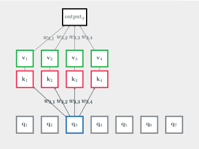
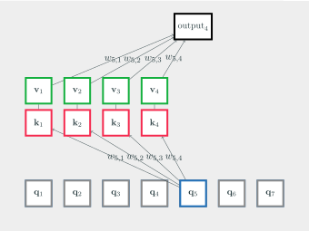

Chapter 10 Attention Mechanism and Transformers
The Attention Mechanism (2015) and the Transformer model (2017), which builds on it, have revolutionised the field of natural language processing (NLP) and have a been widely adopted in all Deep Learning applications.
In this chapter, we’ll be looking in detail at the Attention Mechanism and the Transformer model that is based on it.
As these architectures have mainly originated from NLP, we’ll introduce them in the context of text processing.
10.1 Motivation
10.1.1 The Problem with CNNs and RNNs
To give a bit of context, let’s look back at RNNs. Recurrent Neural Networks (LSTM/GRU) are the model of choice when working with variable-length inputs and are thus a natural fit to operate on text processing.
but:
- the sequential nature of RNNs prohibits parallelisation,
- the context is computed from past only,
- there is no explicit distinction between short and long range dependencies (everything is dealt with via the context),
- training is tricky,
- how can we do you do efficiently transfer learning?
On the other hand, Convolution can
- operate on both time-series (1D convolution), and images,
- be massively parallelised,
- exploit local dependencies (within the kernel) and long range dependencies (using multiple layers),
but:
- we can’t deal with variable-size inputs,
- the position of these dependencies is fixed (see below).
10.1.2 The Problem with Positional Dependencies
Take a simple 1D convolution on a sequence of feature vectors \({\bf x}_i\) with a kernel size of 5. To simply the argument, we are going to ignore cross-channels interactions:
\[ \text{output}_i = w_{-2} {\bf x}_{i-2} + w_{-1} {\bf x}_{i-1} + w_{0} {\bf x}_{i} + w_{1} {\bf x}_{i+1} + w_{+2} {\bf x}_{i+2} + b, \]
The weight \(w_{-1}\) is always associated to the dependence relationship between the current and previous context sample (ie. distance = 1 away in past).
Now, take a dense layer (again ignoring cross-channels interactions):
\[ \text{output}_i = \sum_{j=1}^L w_{i,j} {\bf x}_{j} + b, \] we have same issue that all the relationships are defined according to fixed positions between words, eg. the relationship between the first and third words is assumed to be the same in all sentences.
But look at an actual dependency graph in a sentence:

Figure 10.1: Example of a Sentence Dependency Graph
Distances between relations are not set in stone.
eg. the verb is not always the next word after the subject.
Convolutional and Dense layers are not well equipped to deal with such relationships.
So, what is the problem? Can’t we just make the network bigger?
Yes, the Universal Approximation Theorem tells us that you can always throw more filters at the problem, and basically train the neural net to learn all possible dependency graphs, but it’s clearly not optimal.
The Attention Mechanism comes to the rescue.
10.2 Attention Mechanism
Attention Mechanism was originally motivated by how different regions of an image or correlate words in one sentence in image captioning applications (Xu et al. 2015). This idea was then quickly adapted to explain the relationship between words in sentences Luong, Pham, and Manning (2015).
The idea of the Attention Mechanism has since then been iterated through many papers, and has taken many forms (eg. Bahdanau-Attention, Luong-Attention, etc.). We will look here at the Dot-Product Attention Mechanism as presented in Transformers, as it is arguably the most popular.
10.2.1 Core Mechanism of a Dot-Product Attention Layer
Consider again our Dense layer formulation:
\[ \text{output}_i = \sum_{j=1}^L w_{i,j} {\bf x}_{j} + b, \]
The core idea of Attention is that, instead of learning all possible weights \(w_{i,j}\), we could try to learn a recipe to generate these weights. For instance, something like this:
\[ \text{output}_i = \sum_{j=1}^L f({\bf x}_{i}, {\bf x}_{j}) {\bf x}_{j}, \]
where \(f\) would be a formula that computes the weights.
Taking our previous NLP example, the word is is clearly a verb and hearing
is a subject, hence we could imagine that the weight
\(w_{\text{is},\text{hearing}}\) could be defined, just based on the semantics of
\({\bf x}_\text{is}\) and \({\bf x}_\text{hearing}\) alone, regardless of their
actual positions in the sentence:
\[ w_{\text{is},\text{hearing}} = f({\bf x}_\text{is}, {\bf x}_\text{hearing}). \]
This idea is the main mechanism behind Attention. Let us now see how it is actually done.
To make things more generic we’ll consider two sequences of vectors \({\bf q}_1, \dots, {\bf q}_{L_q}\) (the queries) and another sequence \({\bf k}_1, \dots, {\bf k}_{L_k}\) (the keys). In the following, we will only consider a single element of the original sequence, e.g. \({\bf q}_3\):
The Attention layer will compute an alignment/similarity score \(s\) between each of the keys \({\bf k}_{1}, \dots, {\bf k}_{4}\) and the query \({\bf q}_{3}\):
Many formulas for the alignment score exist. The formula in the Transformer paper is based on the feature vectors scalar product:
\[ s_{i,j} = {\bf q}_{j}^{\top} {\bf k}_{i} / \sqrt{d_k} \]
(note: the normalisation with vector dimension \(d_k\) is optional, but was found to help in training)
The scores \(s\) are a bit like our logits (\(s \gg 0\) means \({\bf q}\) and \({\bf k}\) are very related). Softmax can normalise these to weights that sum up to 1:
\[ [w_{3,1}; w_{3,2}; w_{3,3}; w_{3,4}] = \mathrm{softmax}( [s_{3,1} ; s_{3,2} ; s_{3,3} ; s_{3,4}]) \]
Instead of combining the keys, we combine associated value vectors \({\bf v}_1, \dots, {\bf v}_{L_k}\):
\[ \mathrm{output}_3 = w_{3,1} {\bf v}_1 + w_{3,2} {\bf v}_2 + w_{3,3} {\bf v}_3 + w_{3,4} {\bf v}_4 \]

We can repeat this operation for other query vectors, eg. for \({\bf q}_5\):

Thus, in summary, Attention takes as an input three tensors:
\({\bf Q}=[{\bf q_1}, \dots, {\bf q_{L_q}}]^{\top}\), is a tensor of queries. It is of size \(L_q \times d_q\), where \(L_q\) is the length of the sequence of queries and \(d_q\) the dimension of the queries feature vectors.
\({\bf K}=[{\bf k_1}, \dots, {\bf k_{L_k}}]^{\top}\) and \({\bf V} = [{\bf v_1}, \dots, {\bf v_{L_k}}]^{\top}\) are the tensor containing the keys and values. They are of size \(L_k \times d_q\) and \(L_k \times d_v\), where \(L_k\) is the number of keys, \(d_k=d_q\), and \(d_v\) the dimension of the value feature vectors.
The values correspond to your typical context vectors associated with each word, as you would have in RNNs. The keys and queries are versions/representations of your current word \(i\) under a certain relationship.
From \([{\bf q_1}, \dots, {\bf q_{L_q}}]^{\top}\), \([{\bf k_1}, \dots, {\bf k_{L_k}}]^{\top}\), \([{\bf v_1}, \dots, {\bf v_{L_k}}]^{\top}\), the Attention layer returns a new tensor made of weighted average value vectors:
\[ \text{output}_{i} = \sum_{j=1}^{L_k} w_{i,j} {\bf v}_{j} \]
as we have seen, on the face of it, this looks like a dense layer (each output vector is obtained as a linear combination of the value vectors). The difference is that we have a formula to dymanically compute the weights \(w_{i,j}\) as a function of a score of how aligned \({\bf q}_i\) and \({\bf k}_j\) are:
\[ s_{i,j} = {\bf q}_{j}^{\top} {\bf k}_{i} / \sqrt{d_k} \]
which are then normalised through a softmax layer:
\[ w_{i,j} = \frac{\exp(s_{i,j})}{\sum_{j=1}^{L_k} \exp(s_{i,j})} \quad \text{so as to have $\sum_j w_{i,j} = 1$ and $0 \leq w_{i,j} \leq 1$. } \]
In other words, for each entry \(i\):
- We evaluate the alignment/similarity between the current query vector \({\bf q}_i\) and all the other keys \({\bf k}_j\):
\[ s_{i,j} = {\bf q}_i^\top {\bf k}_j / \sqrt{d_k} \]
- The scores are then normalised across the keys using softmax:
\[ w_{i,j} = \frac{\exp(s_{i,j})}{\sum_{j=1}^{L_k} \exp(s_{i,j})} \]
- We return a new context vector that is the corresponding weighted average of the value/context vectors \({\bf v}_j\):
\[ \text{output}_{i} = \sum_{j=1}^{L_k} w_{i,j} {\bf v}_{j} \]
10.2.2 No-Trainable Parameters
As we loop through the queries and keys, the number of similarities to compute is thus \(L_q \times L_k\). Each similarity measure takes \(\mathcal{O}(d_k)\) multiplications/add so the overall computation complexity is \(\mathcal{O}(L_q \times L_k \times d_k)\).
This is thus very similar complexity to a dense layer (expect that we don’t try to have cross-channel weights).
Importantly, as we have a formula to compute the weights, Attention does not have any trainable parameter. This is something that is apparent when we write down the full mathematical formula:
\[ \small \text{Attention}({\bf Q}, {\bf K}, {\bf V}) = \mathrm{softmax}\left(\frac{{\bf Q} {\bf K}^\top}{\sqrt{d_k}} \right) {\bf V} \]
where \(\mathrm{softmax}\) denotes a row-wise softmax normalisation function.
10.2.3 Self-Attention
Self-Attention is a particular use-case of Attention, where the tensors \({\bf Q}\) and \({\bf K}\),\({\bf V}\) are all derived from a single input tensor \({\bf X} = [{\bf x}_1, {\bf x}_2, \cdots, {\bf x}_L]^{\top}\) of size \(L \times d\), by means of 3 simple linear feature transforms:
\[ {\bf q}_i = {\bf W}_Q^{\top} {\bf x}_i, \]
\[ {\bf k}_i = {\bf W}_K^{\top} {\bf x}_i, \]
\[ {\bf v}_i = {\bf W}_V^{\top} {\bf x}_i . \]
Self-Attention is thus simply given by:
\[ \text{Self-Attention}({\bf X}, {\bf W}_q, {\bf W}_k, {\bf W}_v) = \text{Attention}({\bf X}{\bf W}_V,{\bf X}{\bf W}_Q,{\bf X}{\bf W}_K) \]
If we want to put all that in a single equation we have:
\[ \text{Self-Attention}({\bf X}, {\bf W}_q, {\bf W}_k, {\bf W}_v) = \mathrm{softmax}\left(\frac{{\bf X} {\bf W_{\bf q}}{\bf W_{\bf k}}^\top {\bf X}^\top }{\sqrt{d_k}} \right) {\bf X} {\bf W}_v \]
The only trainable parameters are contained in the \(d \times d_k\) matrices \({\bf W}_K\) and \({\bf W}_Q\) and in the \(d \times d_v\) matrix \({\bf W}_V\). These are relatively small matrices, and they can operate on sequences of any length.
def softmax(x):
return(np.exp(x)/np.exp(x).sum())
# encoder representations of four different words
word_1 = np.array([1, 0, 0]); word_2 = np.array([0, 1, 0]);
word_3 = np.array([1, 1, 0]); word_4 = np.array([0, 0, 1])
# initialisation of the weight matrices
W_Q = np.random.randn(3, 2) # d=3, dK=dQ=2, needs to be trained
W_K = np.random.randn(3, 2) # d=3, dK=dQ=2, needs to be trained
W_V = np.random.randn(3, 2) # d=3, dV=2, needs to be trained
# generating the queries, keys and values
query_1 = word_1 @ W_Q; key_1 = word_1 @ W_K; value_1 = word_1 @ W_V
query_2 = word_2 @ W_Q; key_2 = word_2 @ W_K; value_2 = word_2 @ W_V
query_3 = word_3 @ W_Q; key_3 = word_3 @ W_K; value_3 = word_3 @ W_V
query_4 = word_4 @ W_Q; key_4 = word_4 @ W_K; value_4 = word_4 @ W_V
# scoring the first query vector against all key vectors
scores_1 = array([dot(query_1, key_1), dot(query_1, key_2),
dot(query_1, key_3), dot(query_1, key_4)])
# computing the weights by a softmax operation
weights_1 = softmax(scores_1 / key_1.shape[0] ** 0.5)
# computing first attention vector
attention_1 = weights_1[0]*value_1 + weights_1[1]*value_2 + weights_1[2]*value_3 + weights_1[3]*value_4
print(attention_1)10.2.4 Computational Complexity
Since each feature vector is compared to all the other feature vectors of the sequence, the computational complexity is, similarly to a dense layer, quadratic in the input sequence dimension \(L\).
| Method | Complexity |
|---|---|
| Self-Attention | \(\mathcal{O}(L^2 \times d_k)\) |
| RNN/LSTM/GRU | \(\mathcal{O}(L \times d \times d_v)\) |
| Convolution | \(\mathcal{O}(L \times \text{kernel_size} \times d \times d_v)\) |
| Dense Layer | \(\mathcal{O}(L^2 \times d \times d_v )\) |
Note that we typically choose \(d_k\) to be much smaller than \(d\) (eg. \(d_k=d/8\)), so the computational complexity is reduced (but is still quadratic in the input dimension \(L\)). The idea is that we are only looking at one aspect of the problem, eg. what is the relationship under verb-subject in the sentence?
As with Dense Layers and Convolution, Attention can be easily parallelised, and as with the convolution, we could restrict the length of the sequence \(L\) by limiting the attention window to a local neighbourhood. We could also constrain the input tensor to be of a limited fixed size.
More than the computional complexity, however, it is the number of paremters that is interesting. And clearly the number of trainable parameters is potentially much lower than in RNNs or Convolutions.
| Method | Number of Trainable Parameters |
|---|---|
| Self-Attention | \(\mathcal{O}(d \times d_k + d \times d_k + d \times d_v)\) |
| RNN/LSTM/GRU | \(\mathcal{O}( d \times d_v + d_v \times d_v)\) |
| Convolution | \(\mathcal{O}(\text{kernel_size} \times d \times d_v )\) |
| Dense Layer | \(\mathcal{O}(L \times d \times d_v )\) |
10.2.5 A Perfect Tool for Multi-Modal Processing
Attention is a versatile tool that allows some flexibility about how to design the input tensors \({\bf Q}\) and \({\bf K},{\bf V}\). For instance, if we have one tensor derived from text and one from audio inputs, we fuse/combine both tensors using :
\[ {\bf V}_{\text{audio}/\text{text}} = \text{Attention}({\bf Q}_{\text{audio}}, {\bf K}_{\text{text}}, {\bf V}_{\text{text}}) \]
The sources do not need to be perfectly synchronised (ie. text vector keys and values don’t have to align with query audio vector, see exercise below), and, in fact, the sources don’t even need to be of the same length (ie. \(L_q \neq L_k\)). For these reasons Attention is very well suited for combining multi-modal inputs.
Exercise 10.1 Show that the output of the Attention layer is the same if the entries of the keys and values tensor are shifted or shuffled, e.g:
\[ \text{Attention}( [{\bf q}_1,\dots,{\bf q}_{L_q} ], [{\bf k}_1,{\bf k}_2,\dots,{\bf k}_{L_k} ], [{\bf v}_1,{\bf v}_2,\dots,{\bf v}_{L_k} ]) = \\ \text{Attention}( [{\bf q}_1,\dots,{\bf q}_{L_q} ], [{\bf k}_{L_k}, {\bf k}_{{L_k}-1}, \dots,{\bf k}_1 ], [{\bf v}_{L_k}, {\bf v}_{{L_k}-1}, \dots,{\bf v}_1 ]) \]
10.2.6 The Multi-Head Attention Layer
You can think of Attention as a replacement for convolution layers. You can chain multiple Attention layers, in a similar way to what you would do with convolutional layers.
In Transformers, a set of \(\left(W_{Q},W_{K},W_{V}\right)\) matrices is called an attention head and multi-head attention layer is simply a layer that concatenates the output of multiple attention layers.
The number of heads loosely corresponds to your number of filters in a convolutional layer.
Below is an example in Keras of self-attention 2-head attention:
x = tf.keras.layers.MultiHeadAttention(
num_heads=2, key_dim=2, value_dim=3)(
query=x, key=x, value=x)here we would define two sets of \(\left(W_{Q},W_{K},W_{V}\right)\) matrices and \(d_K=2\) and \(d_V=3\).
10.2.7 Take Away (Attention Mechanism)
RNNs don’t parallelise well and Convolutions assume fixed positional relationships, which is not the case in text.
The Attention Mechanism resolves these issues by defining a formula to dynamically compute the weights between any two positions \(i\) and \(j\), based on the alignment (dot-product) between a _query feature vector for \(i\) and a key feature vector for \(j\).
With Self-Attention, feature transformation matrices allow to produce the queries, keys, and value vectors from a single input tensor.
The computational complexity of Attention is quadratic in the input tensor dimension (as with Dense Layers). Attention does not have any trainable parameters, Self-Attention needs \(W_q\), \(W_k\) and \(W_v\).
Self-Attention and Attention are well suited to work with text processing as the semantics of the words takes precedence over their absolute or relative positions.
Cross-Attention allows you to work with multiple modalities (eg. audio, video, images, text) as it is agnostic to the position of the keys/values and thus can deal with any potential synchronisation issues.
10.3 Transformers
In 2017, Vaswani et al. proposed the Transformer architecture, which is a (relatively!) simple network architecture solely based on attention layers.
This architecture has fundamentally impacted text processing, but also the rest of the deep learning fields.
A. Vaswani et al. Attention Is All You Need. In Advances in Neural Information Processing Systems, page 5998–6008. (2017)
The original publication has generated 57,463 citations as of 2022 (for reference, a paper is doing very well when it has 100+ citations).
10.3.1 an Encoder-Decoder Architecture
The Transformer architecture, as described in the original paper, is presented in Fig.10.2.

Figure 10.2: The Transformer architecture, as described in the original paper (with encoder and decoder parts highlighted in magenta)
The First part of the network (highlighted here in magenta) is an encoder, ie. a sub-network that transforms the input into a meaningful, compact, tensor representation.
Think of it as the VGG network that transforms an image into a compact \(4096 \times 1\) feature vector. And as for VGG, the idea is that this encoder could be re-used with transfer learning.
The Encoder itself is made of a sequence of blocks. At the core of each of these blocks is a Multi-Head Attention layer:
def encoder_block(inputs):
x = MultiHeadAttention(num_heads=2, key_dim=2)(
query=inputs, key=inputs, value=inputs)
x = Dropout(0.1)(x)
# applying normalisation and residual connection
attn = LayerNormalization()(inputs + x)
# 'Feed Forward' is a simple 1x1 conv on the features
x = Conv1D(ff_dim, kernel_size=1, activation="relu")(x)
x = Dropout(dropout)(x)
x = Conv1D(filters=inputs.shape[-1], kernel_size=1)(x)
return LayerNormalization()(attn + x)
def encoder(x, n_blocks):
for i in range(n_blocks):
x = encoder_block(x)
return xThe Decoder, that is also highlighted magenta, is also made of a sequence of Blocks with Multi-Head Attention layers.
10.3.2 Positional Encoder
Note the presence of a Positional Encoder. As Attention strips away any positional information, Transformers propose to encode the position as extra features in the input vector (see original paper for more details about this).
The positional encoder is an embedding \(i \mapsto \phi(i)\) that is appended as additional features to the feature vector, ie. \({\bf x}'_i = [{\bf x}_i; \phi(i)]\).
Why do we need an encoder for this? Why not simply add the position as a simple additional number? ie. \(\phi(i) = [i]\)?
This is because the similarity measure still needs to make sense. Here we use the dot product, thus the similarity between positions \(i\) and \(j\) would simply be \(i \times j\). But we would like \(\phi(i)^\top \phi(j)\) to be \(\gg 0\) if \(i \approx j\) and \(\ll 0\), or at least \(\approx 0\), if they are far away, but this is not the case.
What would work is an embedding that achieves something like this: \[ \phi(i)^\top \phi(j) = \exp( - \lambda (i-j)^2). \]
Such an embedding exists, we talked about it in the case of SVMs with RBF kernels. The embedding is the (infinite) Fourier series basis function.
As we can’t afford the luxury of an infinite embedding, we need to truncate the series. This is what was proposed in the original Transformers paper. Assuming a positional encoding of dimension \(d_{pos}\), they propose:
\[ i \mapsto \phi(i) = \begin{bmatrix} \sin(\omega_1 i) \\ \cos(\omega_1 i) \\[5pt] \sin(\omega_2 i) \\ \cos(\omega_2 i) \\[5pt] \vdots \\ \sin(\omega_{d_{pos}/2} i) \\ \cos(\omega_{d_{pos}/2} i) \end{bmatrix} \quad \text{where } \omega_k = 1/10000^{2k/d_{pos}} \]
The advantage of using a positional encoding vs. hard-coding relationships, as in convolution, is that the position is treated as another piece of information, that can be transformed, combined with other features, or simply ignored. The point is it is up to training to learn what to do with it.
10.3.3 Take Away (Transformers)
There is obviously a lot more to know about Transformers but we have covered here the main idea: it is an encoder/decoder network that is solely based on sequences of Attention layers.
The Transformer model is an encoder-decoder architecture based on Attention layers blocks.
The positional information, which is lost in the attention mechanism, can be embedded in the input vector as extra features.
Transformers benefit from the efficiency of the Attention Mechanism and require fewer parameters and can be easily be parallelised.
Transformers are the backbone of modern NLP networks such as ChatGPT. They are also the backbone of any method that handles multiple modalities (eg. text, image, speech, etc.)